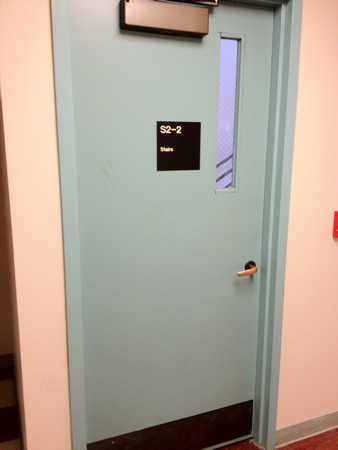
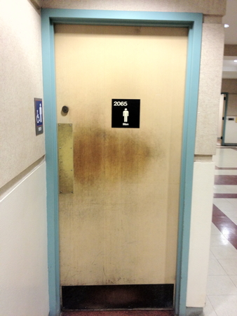
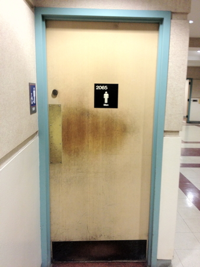
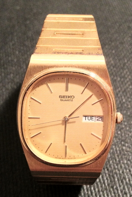
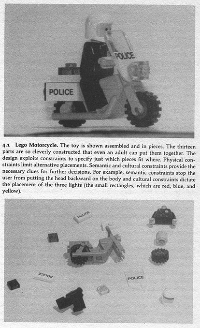
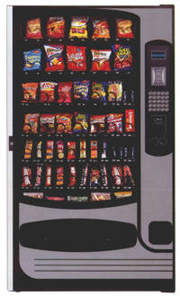
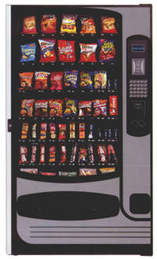
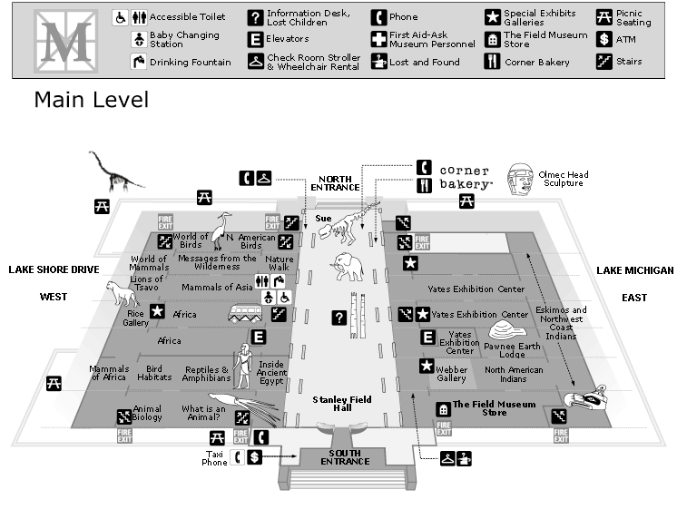

Introduction and the Design of Everyday Things
Information about the Course
Warning about jargon
What is this Course About
This is a course in sensitivity.
Making a program work for you is pretty easy. Making it
work for another user is much harder You need to think about
the actual users of your software early in the design stage, and
keep their needs in mind all the time.
Engineers are not trained in design and psychology and
these are increasingly important in writing good software. People
in general have a hard time sitting quietly while people criticize
your hard work, but this is very important to creating a useful
product.
While this course involves using widgets to create
interfaces, it is primarily about the procedures to go through to
create good designs and evaluate them. This course is not about
teaching you how to write a bunch of programs with a specific
widget library; widget libraries come and go. This course is going
to focus on higher level concepts of how to create useful user
interfaces. We will be using qml as the user interface library for
this course; you will be expected to learn it on your own. There
will be two projects - the first done individually to get everyone
familiar and productive in the language, and the second in small
groups.
Throughout the course there will be many opportunities
for you to present your work to others in small groups, and to the
class as a whole. If you are terrified of public speaking or
working in groups then this class may help cure you of that or
send you screaming into a corner.
Similarly, if you are the kind of person that wants
specific quantifiable metrics for a given grade on a programming
project, then this may not be the class for you. There are many
rules for creating good user interfaces and many are in direct
conflict with each other, so finding the balance is as much an art
as a science - that's why its hard to do.
The Design of Everyday Things
(material from: The Design of Everyday Things by
Donald Norman)
Science Finds
Industry Applies
Man Conforms
(1933 Chicago World's Fair)
Start by looking at Interfaces for common things:
"Affordances - perceived and actual properties of
a thing, primarily those fundamental properties that determine
just how the thing could possibly be used." Affordances provide
strong clues to the operation of a thing
- Knobs are for turning
- Slots are for inserting things into
Provide a good conceptual model and make things visible

from the Design of Everyday
Things
some local examples
  

Two
conceptual
models
- the designer's
conceptual model
- the user's
conceptual model
The system image
is the visible part of a device (including the physical structure,
the documentation, instructions, etc). The designer only talks to
the user through the system image. If the system image doesn't
make the design model clear then the user will create a different
model through their interaction.
Mental models - conceptual model
of the way something works, often constructed from fragmentary
evidence
Jef Raskin - To the user the interface IS the product.
Thermostat - will a room or
oven heat (or cool) faster if the thermostat is turned all the way
to the maximum setting?
2 'folk' theories of thermostats
- timer theory - thermostat controls the relative proportion of
time that the device stays on
- valve theory - thermostat controls how much heat (cold) comes
out of the device
both are wrong
thermostat is an on/off
switch - fully on or fully off - no in between
The design gives no hint to the
actual model so the users form their own theories
Why is the
basic automobile easy to figure out?
- Things are visible
- Good mappings between controls and things controlled
- Single controls have single functions
- at least for driving - the radio/CD player is another story
- Good feedback - immediate and obvious effect
This is
pretty important when you go on a trip and rent a car. You need to
be able to drive that car safely.
Once you get
to the hotel you run into something that may have less obvious
mappings - the alarm clock. Lets take some simple alarm clock
examples that are just clocks and not clock radios or clock radio
phones
Here is a
classic analog clock.
The display
shows the current time and the time that the alarm is set to.
There are
three controls with a pretty decent set of icons:
- small bar: pull out to turn alarm on / push in to turn alarm
off
- small knob: if the knob is pushed in, turning it sets the
alarm, if the knob is pulled out then turning it sets the
time. You can turn the knob slowly or quickly, and turn it in
either direction.
- button on the top: hit it to snooze
How do I know
when the alarm is on? I need look at or feel for the bar on the
back to see if it is in or out.

Here is a
digital analog clock.
The display
shows the current time and the time and whether that time is pm
There are
three controls on the front and top with textual names:
- small 3 position bar on the left ("TIME: FAST / RUN : SLOW"):
push the bar up to fast and the time on the display goes forward
quickly. push the bar to run and the time on the display passes
normally, push the bar to slow and the time on the display goes
forward slowly. If you go past the correct time you need to keep
going back around until the right time appears again
- small 3 position bar on the right (ALARM: ON / OFF / SET") :
on and off are pretty self explanatory, and when this par is
pushed to set then the controls on the left set the alarm time.
- button on the top ("SNOOZER"): hit it to snooze
How do I know
when the alarm is on? Another dot appears a the bottom of the
display under the PM dot.

Here is
another digital analog clock.
The display
shows the current time and the time and whether that time is pm
There are
three controls on the back and top with textual names:
- small 2 position bar on the left ("DIMMER: HI / LO"): sets the
brightness of the display
- small 3 position bar on the (TIME SET / LOCK / ALARM SET") :
push the bar to time set and you can set the current time, push
it to lock and time passes normally, push it to alarm set and
you can set the alarm time
- small push button on left ("SLOW") holding this button
in when in time set or alarm set will move the appropriate time
forward slowly
- small push button on left ("FAST") holding this button
in when in time set or alarm set will move the appropriate time
forward quickly
- small 2 position bar on the right ("ALARM: ON / OFF"): sets
the brightness of the display
- button on the top ("SNOOZ ALARM"): push the lever up to turn
the alarm on and down to turn the alarm off.
How do I know
when the alarm is on? The upper dot of the colon in the time glows
slightly brighter.
Note that
TIMEX is a little inconsistent with their control names: 'DIMMER'
is written horizontally, TIME SET / LOCK / ALARM SET doesn't have
one, slow and fast appear to be named 'HONG KONG' and ALARM is
written vertically.

But in all
three cases one interface remains the same ...
Sony is selling a clock where the time is preset at the factory so
you only need to choose your time zone and it should always keep
the correct time. Other clocks now listen to the airwaves to set
themselves automatically. However you still need to set the alarm
yourself.
Given all of
these choices, what do I use for an alarm clock? my iPhone.
- it knows where it is located so it knows the timezone
- it can regularly check for the current time
- it knows the rules for daylight savings time
- I can change the display settings
- I can set different alarm patterns for different days
- I can set the alarm at any time since the phone is with me all
the time
- gives me access to weather, email, news etc when I wake up
How about watches?
- analogue watch
- small knob on a little stem
- pull the stem out to activate the stem
- turn forward or back to change the time forward or back
- push the stem back in so no accidental changes occur
- setting the day of the week and date are trickier

- digital watch from the 70s
- same basic functionality - 2 to 4 buttons
Mapping -
relationship between controls and their affects. Want the mapping
to be 'natural' - taking advantage of physical analogies and
cultural standards.
- steering wheel
- digital alarm clocks
- stove burners
- light switches

Some examples from my house
- no manuals for the appliances, no notes on what controls what
- trial and error
light switch
for fan/lights in family room

porch lights
(track lighting, a fan with a light, and an outside light)

fuse box / circuit breakers

Constraints
- physical - physically restrict your actions.
- semantic - mentally restrict your actions based on the meaning
of the situation
- cultural - mentally restrict your actions through cultural
conventions
- logical - mentally restrict your actions based on rules of
logic

and logic tells us that there should be no pieces left over
These two books: 101 un-useless Japanese
Inventions and 99
more un-useless Japanese Inventions by Kenji Kawakami
have some novel devices that are interesting to look at in this
context.
http://www.amazon.com/gp/product/0393313697/103-0859795-8002257?v=glance&n=283155
Forcing function
Up until the late 1940s it was possible to try and start
car without the key in the ignition
- the key was put in the dashboard to unlock the car and then
you pressed the starter button
- now its common to insert the key and turn it to start the
car
- separating these functions is making a comeback since you can
now remotely start some cars without having the key in the
ignition and the idea of a 'key' is changing to Bluetooth or
other near field transmission where having the 'key' in the car
allows you to start the car or open the doors
- in some cars you need to use the keys to lock the door - so
you can't lock keys inside
- interlocks
- prevent accidental use of a device
- force operations to take place in proper sequence
- pin on fire extinguisher or hand grenade
- lockins - keeps
operation active preventing someone from permanently stopping it
- if you ask a word processor to quit it should ask you if you
want to save the modified file you have been working on
or discard the changes
- lockouts - prevents
an event from occurring
- in case of fire, its difficult to walk down the stairs
into the basement
7 stages of action
- Forming the goal - state to be achieved (often ill-formed)
- Forming the intention - goal translated into intention to
perform some action
- Specifying an action - translate intention into set of
internal commands
- Executing the action
- Perceiving the state of the world
- Interpreting the state of the world
- Evaluating the outcome
e.g. you reading a book at dusk and
its getting dark.
- goal - get more light
- forming intention - push the switch on the lamp
- specifying action - how to move body
7 Stages as Design Aid
How easily can a person
- Determine the function of the device
- Tell what actions are possible
- Determine mapping from intention to physical movement
- Perform the action
- Tell if system is in desired state
- Determine mapping from system state to interpretation
- Tell what state system is in
A couple examples (with vary
different technologies):
- Faucets
- Airline rapid check-in machines
Think about these in terms of
- Visibility
- Mapping
- Feedback
- 7 Stages of Action
Gulf of execution
- how well does the system allow someone to do their intended
actions directly
- do the affordances provided by the system match the actions
intended by the person
- bad if not clear what actions need to be done to accomplish
the intention
Gulf of
evaluation
- how well does the system provide a visible state that can be
directly perceived and that is interpretable in terms of the
intentions and expectations of the user
- how much effort user must exert to interpret the state of the
system and determine how well the expectations and
intentions have been met
Designing for error
- Understand the cause of error and design to minimize those
causes
- Make it possible to reverse (undo) actions, or make it harder
to do what cannot be reversed
- Make it easier to discover errors that do occur and make them
easier to correct
- Think of an object's user as attempting to do a task, getting
there by imperfect approximations, Don't think of the user as
making errors, think of the actions as approximations of what is
desired
- Visibility - User
can tell the state of the device and the alternatives for action
- Good conceptual model
- User given consistent in presentation of operations and
results
- Good Mappings -
easy to determine relationships between actions and results,
controls and their effects, system state and what's visible
- Feedback - User
receives full and continuous feedback
Class Discussion Topics
Elevators
Arrangement of the buttons
O'Hare

Logos, team colours and theme songs
Vending Machines
 

Finding your way ...
Field Museum floor maps: http://www.fieldmuseum.org/plan_visit/floor_plans.htm

Coming Next Time
In-Class group work related to homework 1
last updated 1/11/2012 - updated the
watch notes
{kind=link}